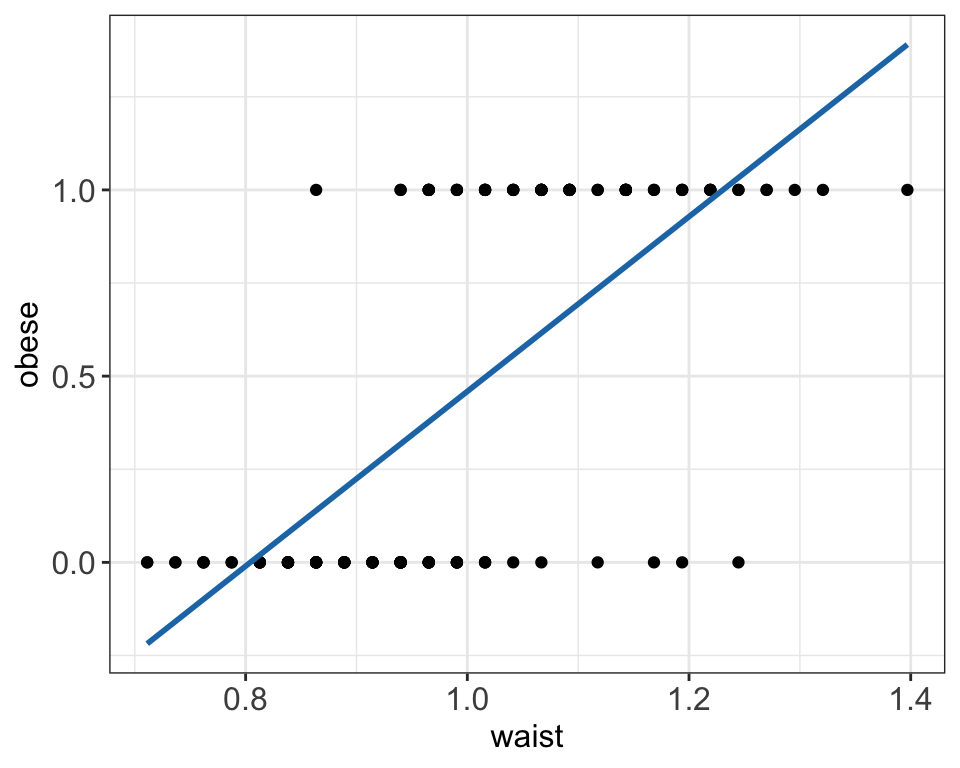
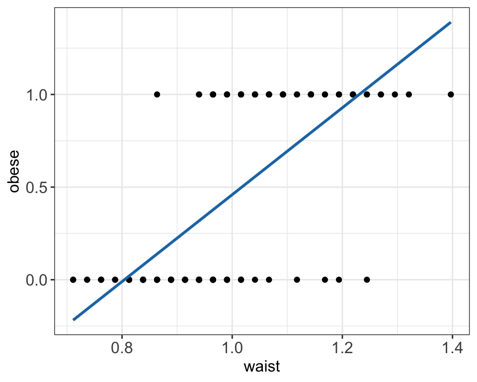
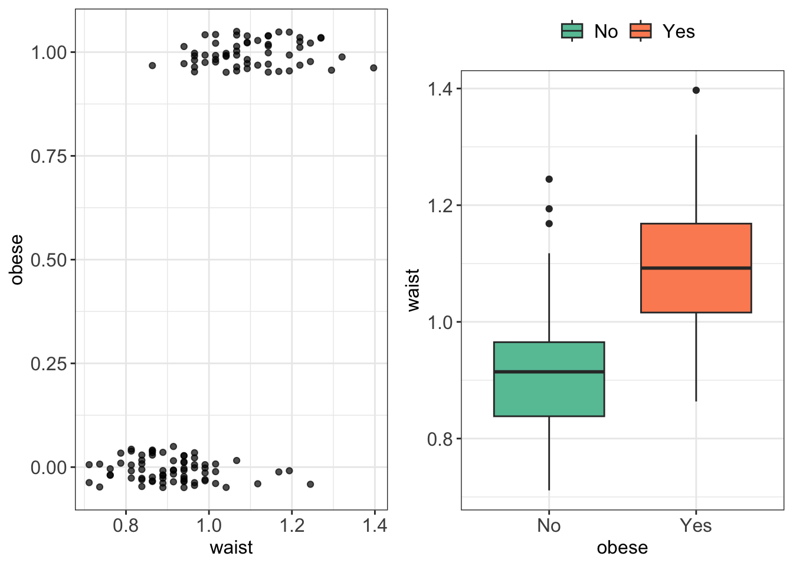
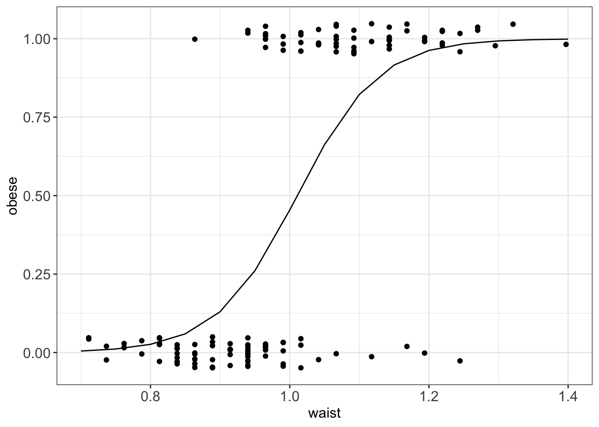
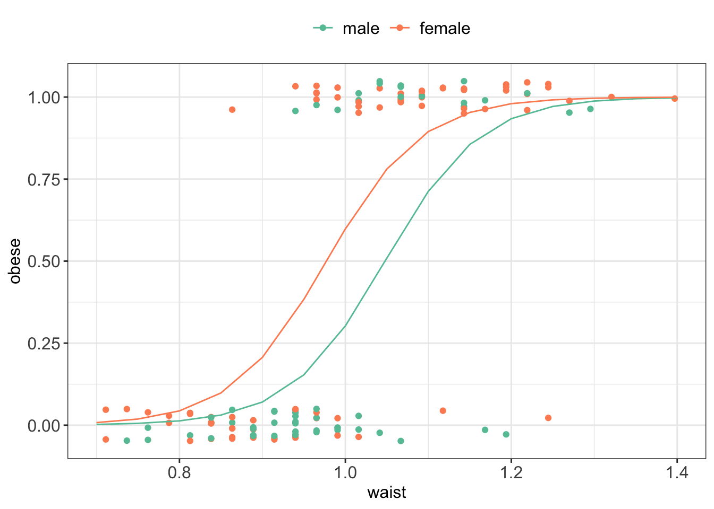

Code
data_diabetes %>%
mutate(obese = as.numeric(obese) - 1) %>%
ggplot(aes(y=obese, x=waist)) +
geom_jitter(width=0, height = 0) +
geom_smooth(method="lm", se=FALSE, color=col.blue.dark) +
my.ggtheme
data_diabetes %>%
mutate(obese = as.numeric(obese) - 1) %>%
ggplot(aes(y=obese, x=waist)) +
geom_jitter(width=0, height = 0) +
geom_smooth(method="lm", se=FALSE, color=col.blue.dark) +
my.ggtheme
Let’s look again at the binary obesity status data and try to fit logistic regression model using waist as explanatory variable instead of fitting inappropriate here simple linear model.
p1 <- data_diabetes %>%
mutate(obese = as.numeric(obese) - 1) %>%
ggplot(aes(y=obese, x=waist)) +
geom_jitter(width=0, height = 0.05, alpha = 0.7) +
my.ggtheme
p2 <- data_diabetes %>%
ggplot(aes(x = obese, y = waist, fill = obese)) +
geom_boxplot() +
scale_fill_brewer(palette = "Set2") +
my.ggtheme
grid.arrange(p1, p2, ncol = 2)
g() is the link function.In R we can use glm() function to fit GLM models:
# re-code obese status from Yes/No to 1/0
data_diabetes <-
data_diabetes %>%
mutate(obese = as.numeric(obese) - 1)
# fit logistic regression model
logmodel_1 <- glm(obese ~ waist, family = binomial(link="logit"), data = data_diabetes)
# print model summary
print(summary(logmodel_1))
##
## Call:
## glm(formula = obese ~ waist, family = binomial(link = "logit"),
## data = data_diabetes)
##
## Deviance Residuals:
## Min 1Q Median 3Q Max
## -2.8408 -0.5918 -0.1867 0.6340 2.2816
##
## Coefficients:
## Estimate Std. Error z value Pr(>|z|)
## (Intercept) -17.357 2.973 -5.837 5.30e-09 ***
## waist 17.174 2.974 5.775 7.71e-09 ***
## ---
## Signif. codes: 0 '***' 0.001 '**' 0.01 '*' 0.05 '.' 0.1 ' ' 1
##
## (Dispersion parameter for binomial family taken to be 1)
##
## Null deviance: 178.71 on 129 degrees of freedom
## Residual deviance: 102.79 on 128 degrees of freedom
## AIC: 106.79
##
## Number of Fisher Scoring iterations: 5
# plot
ggPredict(logmodel_1) +
my.ggtheme
# to get predictions use predict() functions
# if no new observations is specified predictions are returned for the values of exploratory variables used
# we specify response to return prediction on the probability scale
obese_predicted <- predict(logmodel_1, type="response")
print(head(obese_predicted))
## 3 7 9 11 16 21
## 0.98231495 0.93752915 0.07405337 0.41460606 0.22839680 0.72385967In our example, we can check whether waist is associated with obesity status by testing null hypothesis: \(H_0:\beta_1=0\). We calculate Wald statistics as \(W^2 = \frac{(\hat\beta-0)}{\hat {e.s.e}(\hat\beta)} = \frac{17.174}{2.974} = 5.774714\) and we can find the corresponding p-value using standard normal distribution:
2*pnorm(5.774714, lower.tail = F)
## [1] 7.70839e-09which confirms the summary output shown previously above and shows that there is enough evidence to reject the null hypothesis at 5% significance level \(p-value << 0.05\) and conclude that there is a significant association between waist and obesity status.
For instance, given our model we have null deviance of 274.4 and residual deviance of 268.7. The difference 5.7 is larger than than 95th percentile of \(\chi^2(129-128)\) = 3.841459, where 129 is degrees of freedom for null model and 128 is degrees of freedom for null model excluding the waist explanatory variable.
qchisq(df=1, p=0.95)
## [1] 3.841459waist is a significant term in the model.waist the odds of suffering from obesity get multiplied by 28745736.These odds ratios are very high as here we are modeling obesity status with waist measurements, and increasing one unit in waist would mean adding up additional 1m to waist measurements. Typically:
# fit logistic regression including age and gender
logmodel_2 <- glm(obese ~ waist + gender, family = binomial(link="logit"), data = data_diabetes)
# print model summary
print(summary(logmodel_2))
##
## Call:
## glm(formula = obese ~ waist + gender, family = binomial(link = "logit"),
## data = data_diabetes)
##
## Deviance Residuals:
## Min 1Q Median 3Q Max
## -3.0572 -0.5316 -0.1813 0.5024 2.0543
##
## Coefficients:
## Estimate Std. Error z value Pr(>|z|)
## (Intercept) -18.2756 3.1077 -5.881 4.08e-09 ***
## waist 17.4401 3.0523 5.714 1.11e-08 ***
## genderfemale 1.2335 0.5228 2.359 0.0183 *
## ---
## Signif. codes: 0 '***' 0.001 '**' 0.01 '*' 0.05 '.' 0.1 ' ' 1
##
## (Dispersion parameter for binomial family taken to be 1)
##
## Null deviance: 178.708 on 129 degrees of freedom
## Residual deviance: 96.877 on 127 degrees of freedom
## AIC: 102.88
##
## Number of Fisher Scoring iterations: 6
# plot model
ggPredict(logmodel_2) +
my.ggtheme +
scale_color_brewer(palette = "Set2")
Example 3.1 (Number of cancer cases) Suppose we wish to model \(Y_i\) the number of cancer cases in the i-th intermediate geographical location (IG) in Glasgow. We have collected data for 271 small regions with between 2500 and 6000 people living in them. Together with cancer occurrence with have the following data:
We can model the rate of occurrence of cancer using the very same glm function:¨ - now we use poisson family distribution to model counts - and we will include an offset term to the model as we are modeling the rate of occurrence of the cancer that has to be adjusted by different number of people living in different regions.
# Read in and preview data
cancer <- read.csv("data/lm/cancer.csv")
head(cancer)
## IG Y_all E_all pm10 smoke ethnic log.price easting northing
## 1 S02000260 133 106.17907 17.8 21.9 5.58 11.59910 26.16245 66.96574
## 2 S02000261 38 62.43131 18.6 21.8 7.91 11.84940 26.29271 67.00278
## 3 S02000262 97 120.00694 18.6 20.8 9.58 11.74106 26.21429 67.04280
## 4 S02000263 80 109.10245 17.0 14.0 10.39 12.30138 25.45705 67.05938
## 5 S02000264 181 149.77821 18.6 15.2 5.67 11.88449 26.12484 67.09280
## 6 S02000265 77 82.31156 17.0 14.6 5.61 11.82004 25.37644 67.09826
# fit Poisson regression
epid1 <- glm(Y_all ~ pm10 + smoke + ethnic + log.price + easting + northing + offset(log(E_all)),
family = poisson,
data = cancer)
print(summary(epid1))
##
## Call:
## glm(formula = Y_all ~ pm10 + smoke + ethnic + log.price + easting +
## northing + offset(log(E_all)), family = poisson, data = cancer)
##
## Deviance Residuals:
## Min 1Q Median 3Q Max
## -4.2011 -0.9338 -0.1763 0.8959 3.8416
##
## Coefficients:
## Estimate Std. Error z value Pr(>|z|)
## (Intercept) -0.8592657 0.8029040 -1.070 0.284531
## pm10 0.0500269 0.0066724 7.498 6.50e-14 ***
## smoke 0.0033516 0.0009463 3.542 0.000397 ***
## ethnic -0.0049388 0.0006354 -7.773 7.66e-15 ***
## log.price -0.1034461 0.0169943 -6.087 1.15e-09 ***
## easting -0.0331305 0.0103698 -3.195 0.001399 **
## northing 0.0300213 0.0111013 2.704 0.006845 **
## ---
## Signif. codes: 0 '***' 0.001 '**' 0.01 '*' 0.05 '.' 0.1 ' ' 1
##
## (Dispersion parameter for poisson family taken to be 1)
##
## Null deviance: 972.94 on 270 degrees of freedom
## Residual deviance: 565.18 on 264 degrees of freedom
## AIC: 2356.2
##
## Number of Fisher Scoring iterations: 4Rate ratio